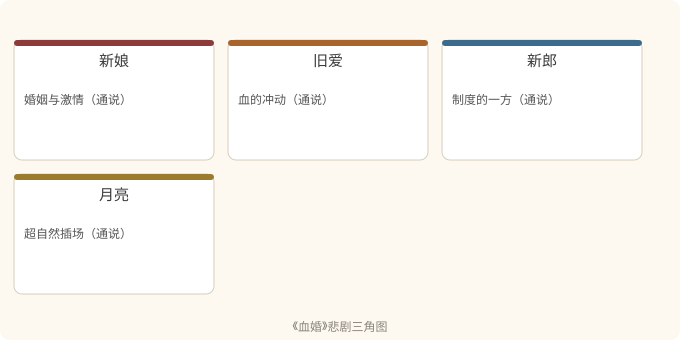

血婚
一、基本信息
| 作者 | 费德里科·加西亚·洛尔卡 |
|---|---|
| 成书/出版 | 1933年（Britannica B355：Bodas de sangre (1933)） Federico Garcia Lorca — Encyclopaedia Britannica（百科全书） |
| 国别/地区 | 西班牙 |
| 时代 | 近代 · 20世纪30年代初 |
| 体裁 | 悲剧 |
| 语言 | 西班牙语 |

《血婚》悲剧三角图（主题·结构图）
二、创作背景
Britannica（B355）：Bodas de sangre——洛尔卡民间悲剧三部曲之一（与 Yerma 1934、La casa de Bernarda Alba 1936 并列——B355 作品列表）。
Britannica（B355）：洛尔卡帮助开启了西班牙戏剧'second Golden Age'。
题材（通说待核）：婚礼当夜新娘与旧爱私奔——血缘与激情的死亡追逐。
三、内容脉络
婚礼与私奔：两个男人与一个女人（情节通说待核——B355未载）。
月亮与乞妇的插场（超自然插场说通说待核）。
四、主要人物表
| 人物 | 身份 | 说明 |
|---|---|---|
| 新娘 | 三部曲女性 | （通说待核，B355未载名） |
| 莱昂纳多 | 旧爱 | （通说待核，B355未载） |
五、主题与艺术特点
- 激情与婚姻制度的冲突（通说待核）。
- 民间悲剧的现代形式（B355：second Golden Age 语境）。
- 安达卢西亚的宿命观（通说待核）。
六、影响与评论
- Britannica：'the most important Spanish poet and playwright of the 20th century'（B355）。
Federico Garcia Lorca — Encyclopaedia Britannica（百科全书） - Britannica：西班牙戏剧'second Golden Age'（B355）。
Federico Garcia Lorca — Encyclopaedia Britannica（百科全书）
七、阅读建议
难点
- 西班牙民间悲剧传统。
- 歌队与超自然插场（通说待核）。
- 《血婚》中译本（人民文学《洛尔卡戏剧集》等——通说待核）。
- 西班牙文原版。
洛尔卡戏剧首选；三部曲连读。
八、待核实
- 莱昂纳多/母亲人名核对（B355未载）。
- 1933年首演细节待核。
- 月亮/乞妇插场细节待核。
本页主要来源
费德里科·加西亚·洛尔卡的其他收录作品：吉普赛谣曲血婚叶尔玛贝尔纳达·阿尔巴的家